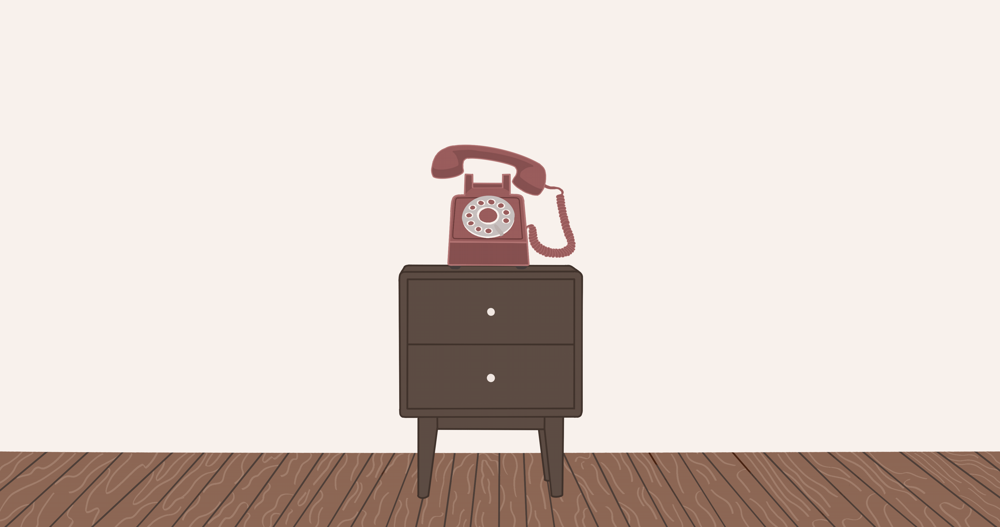

The visual direction for this project was guided by one central feeling: warmth and domesticity. The goal was for the experience to feel like being inside someone's home, familiar, intimate, and lived in. This informed every visual decision, from the color palette to the illustration style.
The original visual intent leaned darker in tone, muted, heavy, and somber to match the discomfort of the experience. However, this felt like it was working against the larger goal of the project. The intent was never to leave the user in a negative place, but to move them from discomfort toward something constructive and hopeful. Shifting to a warmer palette of warm beiges, dusty rose reds, and soft ambient tones created a visual environment that felt more like a home than a void, which better supported the emotional arc the project was trying to build.

The landing screen illustration, warm beige and dusty rose palette with a rotary phone as the focal point
The color palette was not defined upfront with a formal style guide. Instead, it evolved naturally through the process of building the project. The warm beige tones of the background illustrations and the dusty rose red of the rotary phone became the foundation, and the rest of the palette followed from there. Red became the focal color, used in the phone illustration, the buttons, and key UI elements, because it was already the most visually dominant element in the scene.
The rotary phone was chosen over a modern smartphone because it simply felt more right visually. It carries a sense of age and intimacy that a smartphone doesn't, it belongs in a home, on a nightstand, in a family space. That quality matched the emotional tone of the experience.
Typography was chosen intuitively rather than through a formal process. Changa One in italic was selected for the title because it feels bold and authoritative without being cold. Arvo was used for body text because it is warm and readable. Yarndings 20 was chosen specifically for the dialogue and response options because it renders all text as unreadable symbols, making it the most important typographic decision in the project. It ensures that no user can understand what is being said or what they are choosing, regardless of their language background.
Several UI decisions were made to reinforce the emotional arc of the experience. The response buttons are pinned to the bottom of the screen in a 2x2 grid, like a game interface, creating a sense of pressure and urgency. The analog clock in the top right corner acts as the timer, it sweeps faster with each exchange without announcing itself as a countdown, so the pressure builds without feeling like a game mechanic. The speech bubble sits to the left of the phone, with a tail pointing toward it, so the voice feels like it is coming from the phone itself. The pre-prompts after the call appear one at a time, fading in and out, so each line lands individually before the next one arrives.